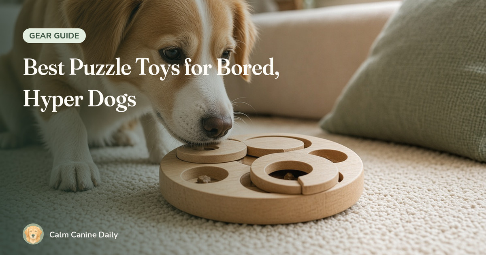

Reviews & Guides

Brain Training for Dogs Review: What’s Inside, Who It Helps, and What to Watch For
Brain Training for Dogs review: what's included, who it may help, what to watch for, and when a trainer is the better choice. No star rating.

Best Calming Dog Beds for Anxious Dogs
The best calming dog bed can be a comfortable place to land, not a treatment for anxiety. See styles we checked and how to build a settle routine.

Best Dog Crates for Crate Training a Puppy
The best crate for crate training a puppy is a bedroom you teach, not a timeout. See sizes, styles we checked, and a slow introduction.

Best No-Pull Dog Harnesses for Leash Pullers
The best no-pull harness can make walks manageable, but it is not a training plan. See five we checked, fit tips, and how to pair them with practice.

Best Puzzle Toys for Bored, Hyper Dogs
The best puzzle toys for dogs who are bored or buzzing after a walk: five we checked, how to start easy, and how mental work supports settling.

Brain Training for Dogs vs SpiritDog vs Zak George: Which Online Dog Training Course Is Worth It?
Brain Training for Dogs vs SpiritDog vs Zak George: prices, guarantees, and who each course is for. Honest comparison, checked Nov. 20, 2026.